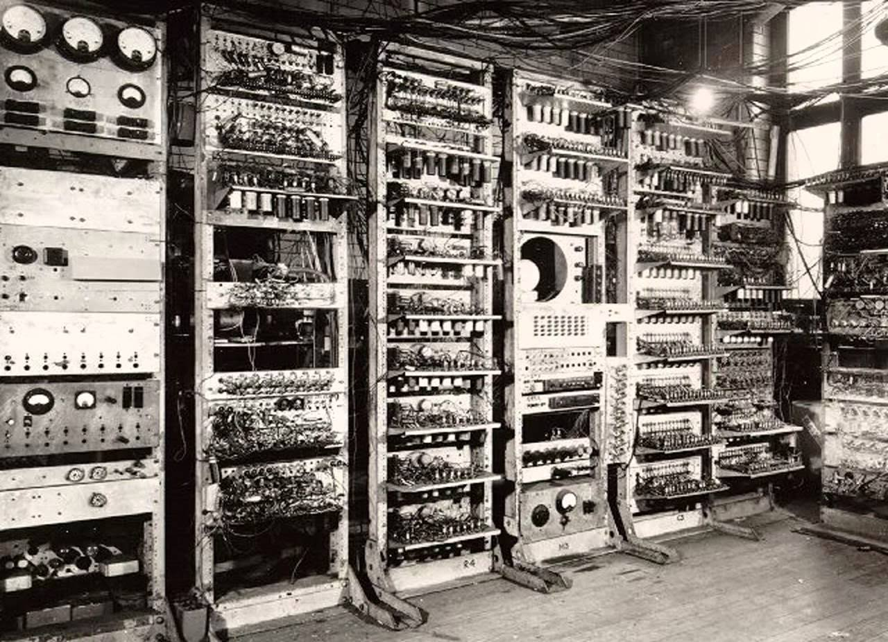

Allan turing não só foi a pessoa que inovou a tecnologia, como foi também um matemático, lógico, criptoanalista, filósofo e biólogo teórico britânico. Nacido em 23 de junho de 1912, Turing tinha grande interesse nos estudos de Von Neumann e na reflexão sobre física quântica, essa motivação de Turing impulsionou seus estudos sobre inteligência artificial, pois ele acreditava que essa indeterminação na menor porção atômica poderia ser o elemento diferenciador entre humanos e máquinas.
Um dos feitos mais famosos dele, se não o mais, foi o desenvolvimento de uma maquina conhecida como "Bomba Eletromecânica" (The Bombe, em inglês) capaz de decifrar o "código da máquina enigma" usado pelos nazistas durante a segunda guerra mundial, dando assim aos aliados uma vantagem que permitiu derrotar mais depressa a Alemanha.
Turing também desenvolveu os primeiros testes capazes de distinguir a inteligência artificial da inteligência humana, seguida por perguntas que consistem em avaliar a inteligência do ser humano, o nome do teste é "O teste de Turing" isto, é, com certeza o maior legado de Turing.
Após a guerra, turing continuou com seu trabalho no desenvolvimento de um computador e uma inteligência artificial. Em janeiro de 1952, teve sua casa assaltada pelo homem qual ele tinha um relacionamento, ao admitir á polícia sua relação com o assaltante, foi indiciado por "indecência grave". Naquela época, qualquer relação LGBT era proibida na Inglaterra, levando Turing ao julgamento.
Turing foi forçado a afastar-se do seu trabalho. Para evitar ser preso, ele aceitou passar por um "tratamento" á base de estrogênio que na verdade consistia em uma castração química. Dois anos após o ocorrido, Turing foi encontrado morto em sua própria casa. A causa da morte foi envenenamento por cianeto, possivelmente por ingerir uma maçã envenenada com este componente químico. Assim sua morte foi registrada como suicídio, os familiares de Turing relataram uns anos após o acontecido, que a situação a foi ocorrida por engano. Até hoje não se sabe se sua morte foi proposital ou acidental.